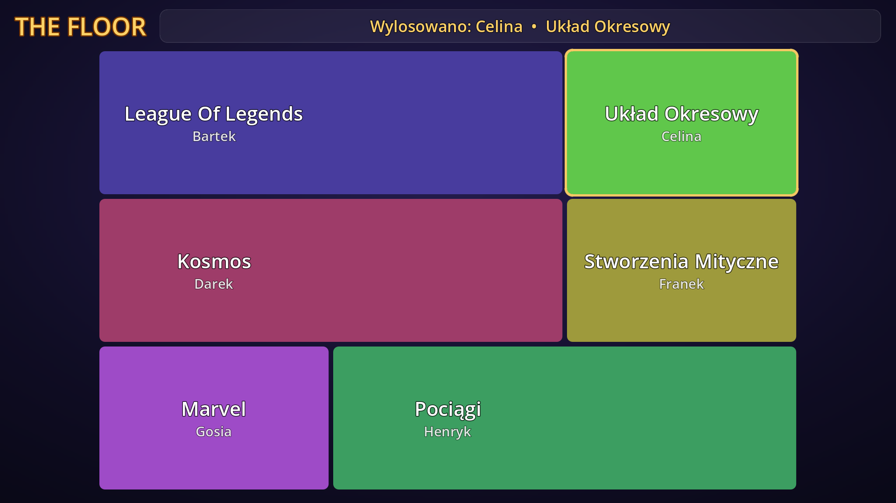
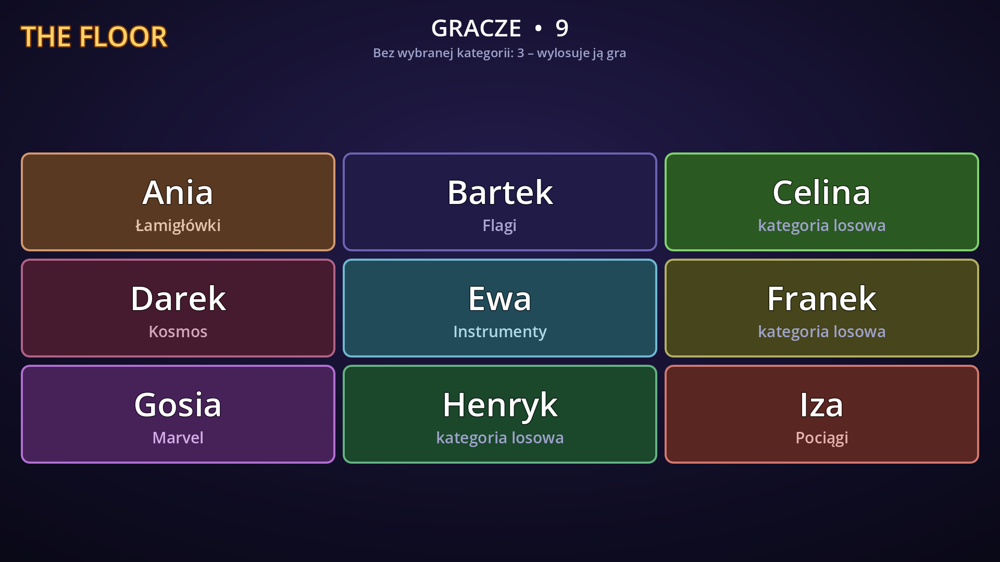
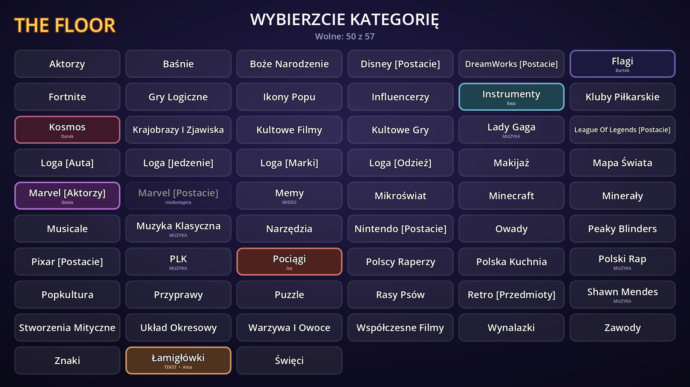
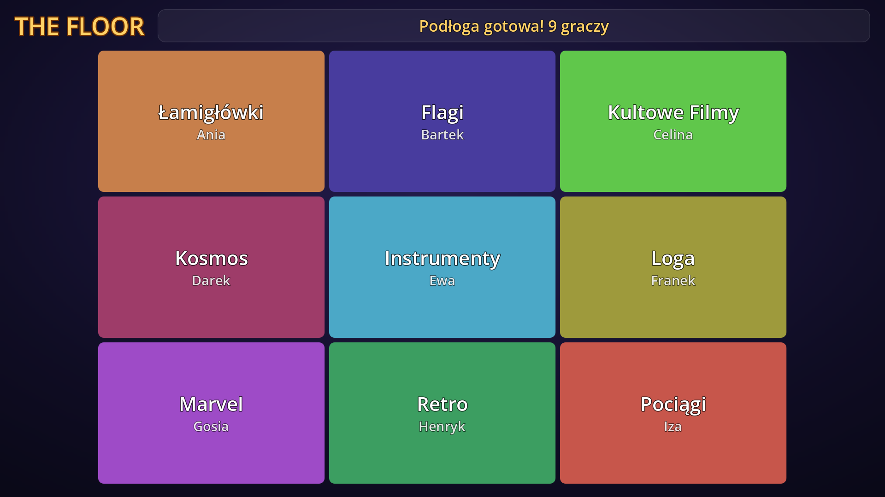
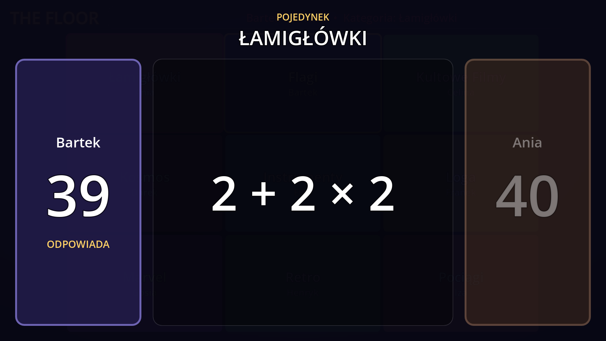
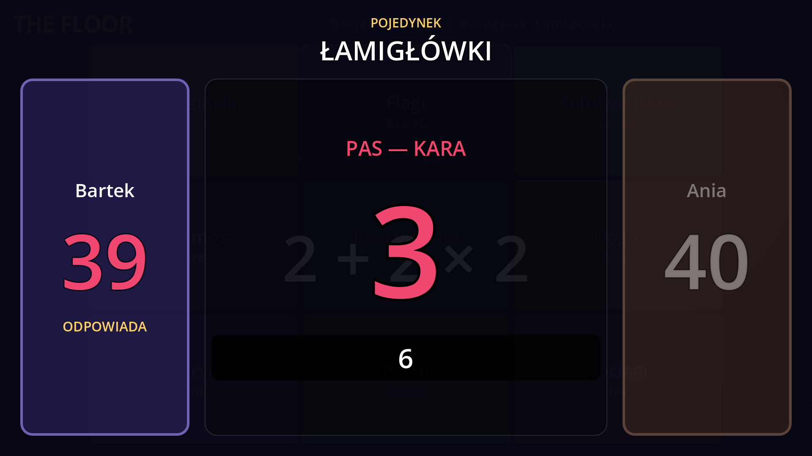
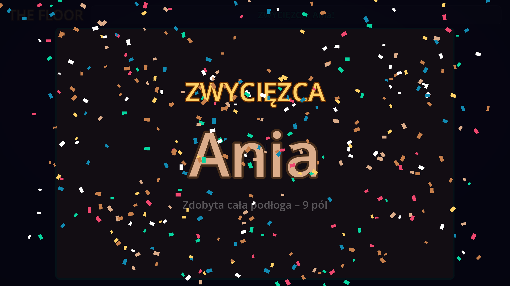
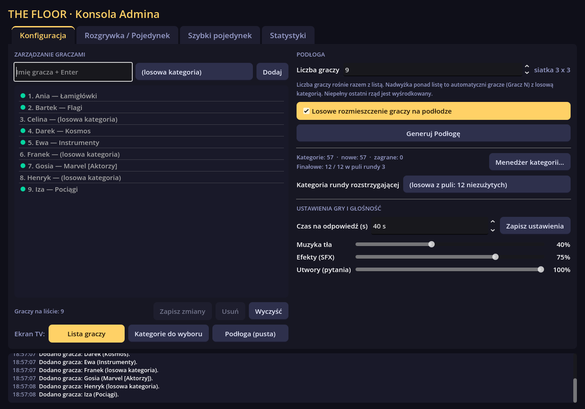
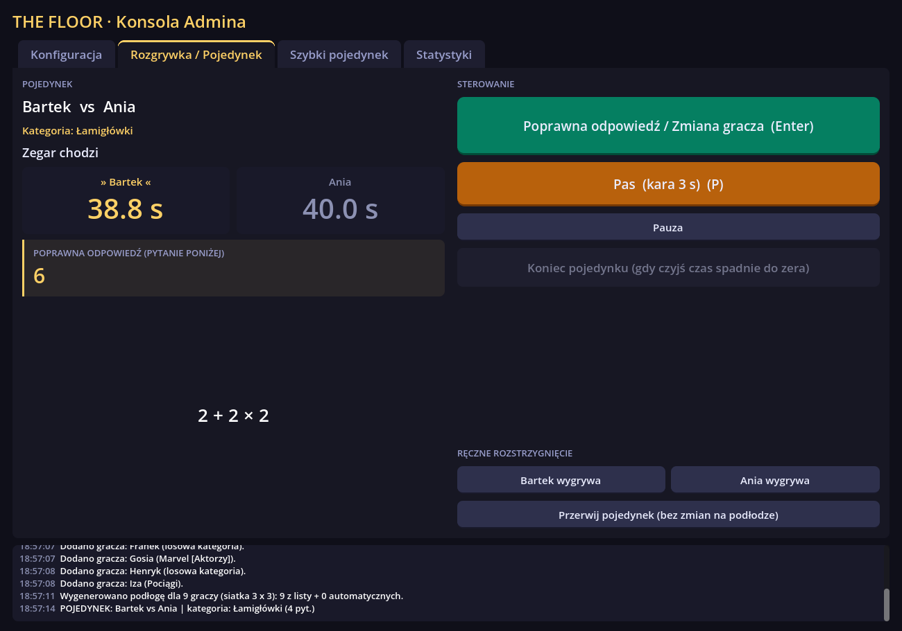
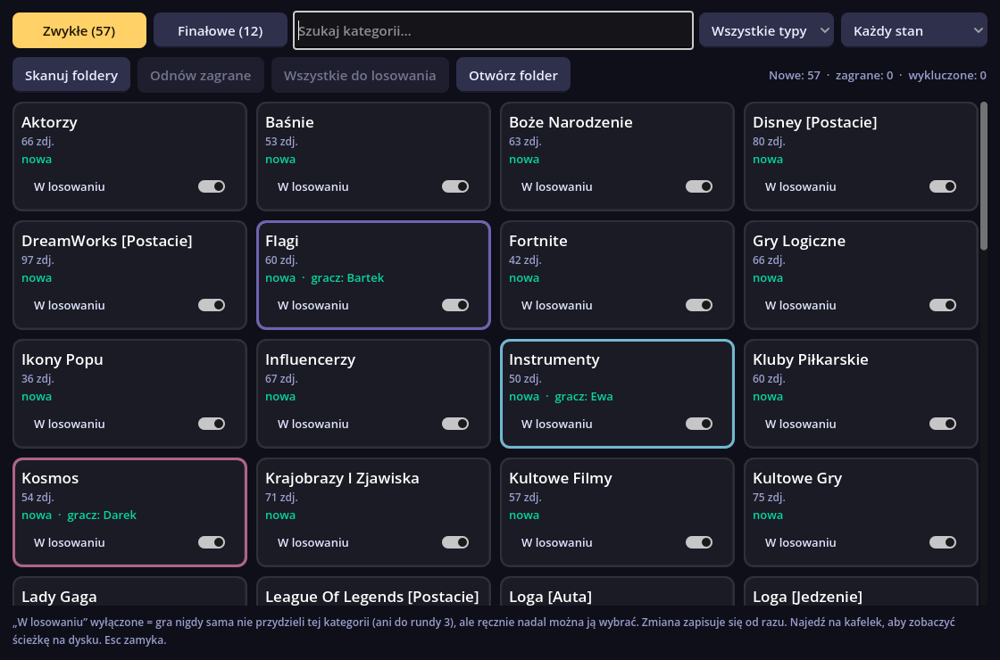

THE FLOOR
Każdy gracz ma swoje pole i swoją kategorię. W pojedynkach na czas trzeba szybciej rozpoznawać zdjęcia, utwory, filmy albo odpowiadać na pytania tekstowe. Zwycięzca przejmuje terytorium przegranego, a na końcu cała podłoga należy do jednej osoby.

01O grze
Gra działa na dwóch oknach. Ekran TV widzą wszyscy gracze, a konsolę prowadzącego widzi tylko osoba, która prowadzi grę i zalicza odpowiedzi.
Dla graczy
- Podłoga z polami graczy, ich kategoriami i kolorami.
- Losowanie gracza w formie ruletki.
- Ekran pojedynku z dwoma zegarami, odliczaniem i karą za pas.
- Animowane przejęcie terytorium.
- Ekran zwycięzcy z konfetti i muzyką.
- Przed grą: lista graczy i tablica kategorii do wyboru.
Dla prowadzącego
- Dodawanie graczy i przypisywanie im kategorii.
- Generowanie podłogi.
- Losowanie gracza i wybór przeciwnika.
- Sterowanie pojedynkiem, z podglądem poprawnej odpowiedzi.
- Menedżer kategorii, statystyki sesji, szybki pojedynek i ustawienia.
Co jest w grze
Najprostsza kategoria: folder z obrazkami, a nazwa każdego pliku to poprawna odpowiedź.
Utwory .ogg grają jako pytanie, a na ekranie stoi obrazek tła kategorii.
Filmy .ogv grają w pętli. Można je mieszać ze zdjęciami w jednej kategorii.
Zagadki, działania, cytaty. Jeden plik .txt to cała kategoria, a każda linia to pytanie = odpowiedź.
Rozgrywany do dwóch wygranych rund. Przy remisie decyduje runda w kategorii z osobnego folderu finałowego.
Ranking sesji z sortowaniem oraz ciekawostki: najszybsza odpowiedź, najwięcej pasów i inne.
Pojedyncza runda bez podłogi, np. na rozgrzewkę albo dogrywkę.
Tekst i podłoga są rysowane w natywnej rozdzielczości telewizora.
Wszystko działa lokalnie, a pliki kategorii możesz podmieniać bez restartu gry.
02Zasady
Zasady są wzorowane na teleturnieju. Wszystkie liczy gra, a prowadzący tylko zalicza odpowiedzi.
- Podłoga. Każdy gracz dostaje jedno pole i jedną kategorię. Liczba graczy może wynosić od 2 do 100, a siatka sama dopasowuje się do tej liczby. Kategorię gracz może wybrać sam albo dostać ją losowo.
- Losowanie. Ruletka wybiera gracza, który zaatakuje. W pierwszej kolejności losuje osoby, które nie grały jeszcze żadnego pojedynku. Wylosowany gracz wybiera przeciwnika spośród sąsiadów.
- Pojedynek. Gra się w kategorii obrońcy. Każdy gracz ma własny zegar, domyślnie 45 sekund. Po odliczaniu 3-2-1 pojawia się pierwsze pytanie. Kto odpowie poprawnie, przekazuje ruch przeciwnikowi, a jego własny zegar się zatrzymuje.
- Pas. Gracz może spasować. Wtedy na ekranie pojawia się poprawna odpowiedź, a jemu ubywają 3 sekundy kary, zanim zobaczy następne pytanie.
- Wynik. Przegrywa ten, komu pierwszemu skończy się czas. Całe jego terytorium przechodzi na zwycięzcę. Kategoria obrońcy znika z gry, a zwycięzca gra dalej kategorią atakującego.
- Dalej. Zwycięzca może od razu walczyć dalej albo „zejść z podłogi”. W tym drugim przypadku ruletka losuje kogoś innego, a on sam nie zostanie wylosowany w następnym losowaniu.
- Finał. Gdy zostaje dwoje graczy, pojedynek toczy się do dwóch wygranych rund.
Runda 1 jest w kategorii obrońcy, runda 2 w kategorii atakującego. Przy remisie 1:1 rozstrzyga
runda w kategorii z folderu
kategorie final. - Koniec. Gdy cała podłoga należy do jednej osoby, pojawia się ekran zwycięzcy, konfetti i muzyka.
03Galeria
Zrzuty z gry w rozdzielczości 1920×1080. Kliknij, aby powiększyć.


















04Uruchomienie
Grę uruchamiasz na komputerze z Windows. Najwygodniej mieć podłączony telewizor albo drugi monitor.
Co jest potrzebne
- Windows 10 lub 11 (64-bit).
- Telewizor lub drugi monitor jako ekran TV. Można grać też na jednym ekranie.
- Głośniki: gra ma muzykę, efekty i kategorie muzyczne.
- Twoje kategorie, czyli foldery ze zdjęciami, muzyką, wideo albo pliki
.txt.
Układ plików
The Floor/
├─ The Floor.exe ← uruchom ten plik
├─ The Floor.pck ← gra (musi leżeć obok .exe)
├─ kategorie/ ← zwykłe kategorie
├─ kategorie final/ ← kategorie rundy rozstrzygającej
└─ audio/music/win/ ← muzyka zwycięstwa (.ogg)- Pobierz albo zbuduj grę. Gotowa wersja, jeśli została opublikowana, jest w zakładce Releases. Możesz też zbudować ją samodzielnie (patrz Dla twórców).
- Dodaj kategorie do folderów
kategorieikategorie finalobok pliku.exe(patrz Kategorie). Jeśli folderu nie ma, gra utworzy pusty przy pierwszym uruchomieniu. - Podłącz telewizor jako drugi ekran w trybie „Rozszerz”, a nie „Duplikuj”.
- Uruchom
The Floor.exe. Ekran gry otworzy się na pełnym ekranie drugiego monitora, a konsola prowadzącego na głównym. Przy jednym monitorze konsola zostaje na wierzchu okna gry.
The Floor.console.exe to ta sama gra z oknem konsoli, w którym widać komunikaty
i błędy. Przydaje się, gdy coś nie działa, np. nie wczytuje się kategoria.05Kategorie
Kategorie to zwykłe foldery i pliki na dysku. Nazwa folderu to nazwa kategorii, a nazwa pliku to poprawna odpowiedź. Nic nie trzeba importować ani konwertować.
kategorie/
├─ Kuchnia Śląska/ ← kategoria ze zdjęciami
│ ├─ Rolada.jpg ← odpowiedź: „Rolada”
│ └─ Kluski śląskie.png
├─ Marvel [Aktorzy]/ ← wariant: na TV „Marvel”, w konsoli „Marvel [Aktorzy]”
├─ Hity Lat 80/ ← kategoria muzyczna
│ ├─ tlo.jpg ← jeden obrazek = tło ekranu pojedynku
│ └─ Take On Me - a-ha.ogg ← odpowiedź: „Take On Me - a-ha”
├─ Las/ ← zdjęcia i wideo razem
│ ├─ Bocian.jpg
│ └─ Lis.ogv
└─ Matematyka.txt ← kategoria tekstowa (sam plik, bez folderu)| Rodzaj | Pliki | Jak działa |
|---|---|---|
| Zdjęcia | .jpg .jpeg .png .webp .bmp .tga |
Zdjęcie na środku ekranu. Gra sama dopasowuje rozmiar do ekranu, ale ostrość zależy od jakości pliku. |
| Muzyka | .ogg + opcjonalnie 1 obrazek |
Każdy plik .ogg w folderze sprawia, że kategoria jest muzyczna. Utwór gra w pętli,
a muzyka tła milknie na czas pojedynku. Jedyny obrazek w folderze służy za tło. |
| Wideo | .ogv (Ogg Theora) |
Film gra w pętli w miejscu zdjęcia, a muzyka tła jest wtedy ściszona. Zdjęcia i filmy można mieszać w jednym folderze. |
| Tekst | .txt bezpośrednio w kategorie/ |
Duży tekst pytania na ekranie, a czcionka dopasowuje się do długości. Format pliku opisano niżej. |
Kategoria tekstowa
Jeden plik to jedna kategoria. Nazwa pliku to nazwa kategorii, a każda linia to jedno pytanie:
# linie zaczynające się od # są pomijane
2+2×2 = 6
x = 3, y = 2, x+y = 5
Co ma ręce, a nie ma nóg? = Zegar
Zagadka:\nIle miesięcy ma 28 dni? = Wszystkie- Odpowiedzią jest tekst po ostatnim znaku
=, więc samo pytanie też może zawierać=. - Wpisane
\nłamie wiersz na ekranie. - Zapisz plik w UTF-8, żeby polskie znaki działały. Notatnik w Windows robi to domyślnie.
Warianty i finał
- Warianty: foldery z dopiskiem w nawiasie kwadratowym, np.
Marvel [Aktorzy]iMarvel [Postacie], to osobne kategorie. Na podłodze obie nazywają się „Marvel”, dlatego na jednej podłodze może być tylko jedna z nich. - Kategorie finałowe: folder
kategorie finalma taki sam układ. Te kategorie grane są wyłącznie w rundzie rozstrzygającej finału, a każda raz na sesję. - Muzyka zwycięstwa: pliki
.oggwaudio/music/win. Gra losuje jeden i odtwarza do 60 sekund.
Dobre praktyki
- Nazwy plików to odpowiedzi. Pisz je tak, jak ma je zobaczyć publiczność, np.
Wieża Eiffla.jpg, a nieIMG_2041.jpg. - Znaki zakazane w Windows:
? : / \ * " < > |nie mogą być w nazwie pliku. Odpowiedzi z takimi znakami wpisz do kategorii tekstowej. - Liczba pytań: warto mieć przynajmniej 40–60 pytań na kategorię, bo w pojedynku idą szybko. Gdy się skończą, gra tasuje je od nowa.
- Jakość zdjęć: na dużym telewizorze widać jakość pliku. Najlepiej sprawdzają się zdjęcia od ok. 1000 px w górę.
- Konwersja wideo: filmy
.mp4i inne przekonwertujesz do.ogvnp. programem ffmpeg:ffmpeg -i film.mp4 -c:v libtheora -q:v 7 -c:a libvorbis -q:a 5 film.ogv - Zmiany w trakcie gry: po dodaniu lub podmianie plików kliknij Skanuj foldery w menedżerze kategorii. Restart nie jest potrzebny.
06Prowadzenie gry
Wszystko robisz w konsoli prowadzącego. Typowy przebieg wieczoru wygląda tak:
- Gracze (zakładka Konfiguracja). Wpisz imię i naciśnij Enter. Kursor zostaje w polu, więc możesz od razu wpisywać kolejne imiona. Kategorię wybierasz przyciskiem obok pola imienia: otwiera się lista z wyszukiwarką i filtrami, a po liście poruszasz się strzałkami. Bez wyboru gracz dostanie kategorię losową.
- Ekran TV przed grą. Przełącznikami Ekran TV pokazujesz na telewizorze Listę graczy albo Kategorie do wyboru. Gracze mogą wtedy wybierać kategorie, a Ty od razu je przypisujesz.
- Menedżer kategorii. Tu widać wszystkie kategorie jako kafelki. Przełącznikiem W losowaniu wyłączasz te, których gra ma nigdy sama nie przydzielać. Tu też skanujesz foldery i odnawiasz zagrane kategorie, np. na nowy wieczór.
- Generuj podłogę. Jeśli liczba graczy jest większa niż lista, brakujących uzupełnią automatyczni „Gracz N”. TV sam przełączy się na podłogę.
- Losuj gracza, wybierz przeciwnika, rozpocznij pojedynek (zakładka Rozgrywka).
- Pojedynek. Enter rozpoczyna odliczanie. Potem każde Enter to poprawna odpowiedź i zmiana gracza, a P to pas. Poprawną odpowiedź widzisz w konsoli, a przy filmie także wyciszony podgląd.
- Po pojedynku. Gdy komuś skończy się czas, kliknij Koniec pojedynku. Możesz też rozstrzygnąć ręcznie albo przerwać pojedynek bez zmian na podłodze.
| Skrót | Działanie |
|---|---|
| Enter / Spacja | START pojedynku, a potem poprawna odpowiedź i zmiana gracza |
| P | Pas (3 s kary, na ekranie pojawia się poprawna odpowiedź) |
| Enter w polu imienia | Dodaje gracza i zostawia kursor w polu |
| Strzałki / Enter / Esc | W okienku wyboru kategorii: ruch po liście, wybór, zamknięcie |
Szybki pojedynek
Osobna zakładka: jedna runda w dowolnej kategorii, także finałowej. Imiona graczy są opcjonalne. Podłoga i statystyki zostają nietknięte.
Statystyki
Ranking sesji: tytuły, wygrane pojedynki, skuteczność, przejęte pola i poprawne odpowiedzi. Kliknięcie nagłówka kolumny sortuje tabelę. Do tego ciekawostki z sesji.
Ustawienia
Czas na odpowiedź (10–300 s) i głośności muzyki, efektów oraz utworów-pytań. Wykluczenia kategorii zapisują się same, a resztę zapisuje przycisk Zapisz ustawienia.
07Najczęstsze problemy
Kategoria się nie pojawia albo jest „pusta”
Sprawdź, czy folder leży w kategorie obok .exe i czy pliki mają obsługiwane rozszerzenia.
Potem kliknij Skanuj foldery. Szczegóły zobaczysz w The Floor.console.exe.
Film się nie odtwarza
Gra odtwarza tylko .ogv (Ogg Theora). Pliki .mp4, .mkv i .webm
trzeba przekonwertować, np. poleceniem ffmpeg z sekcji Kategorie.
Krzaki zamiast polskich znaków w pytaniach
Plik .txt nie jest zapisany w UTF-8. Otwórz go w Notatniku, wybierz Zapisz jako i ustaw kodowanie UTF-8.
Ekran gry otwiera się na złym monitorze
Ekran gry trafia na drugi monitor w Windows. Ustaw telewizor jako drugi ekran w trybie „Rozszerz” albo zamień kolejność ekranów w Ustawieniach ekranu.
Zdjęcia są rozmyte na dużym TV
Napisy i podłoga są zawsze ostre, ale zdjęcie nie będzie lepsze niż plik. Podmień małe obrazki na większe.
Ustawienia z innego komputera
Ustawienia są w %APPDATA%\Godot\app_userdata\The Floor\settings.cfg. Skopiuj ten plik,
żeby przenieść czas odpowiedzi, głośności i wykluczone kategorie.
08Dla twórców
Gra jest napisana w Godot 4.7 (GDScript, renderer GL Compatibility). Kod, komentarze i interfejs są po polsku.
Budowanie .exe
- Zainstaluj Godot 4.7.2 i szablony eksportu: w edytorze Edytor → Zarządzaj szablonami eksportu.
- Wybierz Projekt → Eksportuj…, preset Windows Desktop, a potem Eksportuj projekt.
Albo z wiersza poleceń, w folderze projektu:
godot --headless --path . --export-release "Windows Desktop" "The Floor.exe"Foldery kategorie, kategorie final i audio/music/win nie wchodzą do .pck.
Gra czyta je z folderu, w którym leży .exe.
Architektura w skrócie
Okna nie znają się nawzajem. Przepływ jest jednokierunkowy:
Konsola admina ──(metody)──▶ GameManager ──(sygnały)──▶ ekran TV / pojedynek / statystykiGameManagerto jedyne źródło prawdy: gracze, podłoga, fazy, zegary i finał.CategoryManagerskanuje foldery i wczytuje pliki w locie, bez importu Godota.AudioManager,StatsManageriSettingsManagerodpowiadają za dźwięk, statystyki i ustawienia.
Szczegółowy opis projektu jest w pliku CLAUDE.md.